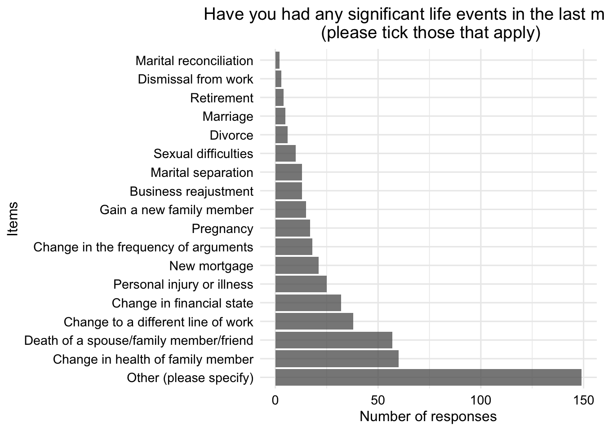

Participants were asked whether they had experienced any significant life events in the month prior to the start of the study. The exact wording and response options of the question were as follows: “Have you had any significant life events in the last month? (please tick those that apply)”
Death of a spouse/close family member/friend
Divorce
Marital separation
Personal injury or illness not related to your IBD
Marriage
Dismissal from work
Marital reconciliation
Retirement
Change in health of family member
Pregnancy
Sexual difficulties
Gain a new family member
Business readjustment
Change in financial state
Change to a different line of work
Change in the frequency of arguments
New mortgage
Other (please give details)
For analysis, patients’ responses were used to construct a binary variable indicating whether a patient had experienced a life event in the past month. In this analysis, our aim was to determine the extent to which experiencing a significant life event was associated with subsequent patient-reported and objective flares.
Setting up in R
R Packages
Helper functions
Code
summon_statistical_test <-function(data, dependent, independent) {# Chi square tests/Fisher's exact test/Wilcox/Kruskal-Wallis# for the dependent variable vs each independent variable# Dependent variables must be discrete purrr::map2_df(.x = independent,.y = dependent,.f =function(.x, .y) {# Remove NA data %<>% dplyr::filter(!is.na(!!sym(.x)), !is.na(!!sym(.y))) x <- data %>% dplyr::pull(.x) y <- data %>% dplyr::pull(.y)# Check if x is continuous (numeric) or not continuous_flag <-is.numeric(x)# If continuous, use a Wilcox/Mann Whitney if y has 2 levels# or Kruskal Wallis if >2 n_levels_y <-levels(y) %>%length()if (continuous_flag & (n_levels_y <=2)) {# Wilcoxon# Formula as score ~ group test_formula <-as.formula(paste0(.x, " ~ ", .y))wilcox_test(data, formula = test_formula) %>%# Calculate n for consistency with kruskal_test dplyr::mutate(n = n1 + n2) %>%# Don't need the adjusted p values as we adjust ourselves in a second dplyr::select(-tidyselect::any_of(c('.y.', 'group1', 'group2', 'n1', 'n2', 'p.adj', 'p.adj.signif'))) %>% dplyr::mutate(x = .x,y = .y,method ='Wilcox test') } elseif (continuous_flag & (n_levels_y >2)) {# Formula as score ~ group test_formula <-as.formula(paste0(.x, " ~ ", .y))kruskal_test(data, formula = test_formula) %>% dplyr::select(-.y.) %>% dplyr::mutate(x = .x, y = .y) } else {# Otherwise use categorical tests# Chi square test_result <-chisq.test(x = x, y = y)# If any expected counts are < 5 then we should use a Fisher fisher_flag <-any(test_result$expected <5)if (fisher_flag) {# If one of the counts is < 5 use Fisher exact testfisher_test(table(x, y), simulate.p.value =TRUE, B =1e5) %>% dplyr::mutate(x = .x,y = .y,method ='Fisher\'s exact test') } else {chisq_test(x = x, y = y) %>% dplyr::mutate(x = .x, y = .y) } } } ) %>% dplyr::mutate(p.adjust =p.adjust(p = p, method ='fdr')) %>% dplyr::mutate(p.adjust =signif(p.adjust, 3)) %>% dplyr::select(-tidyselect::any_of(c('p.signif'))) %>% dplyr::mutate(p.adjust.signif = dplyr::case_when( p.adjust <0.0001~"****", p.adjust <0.001~"***", p.adjust <0.01~"**", p.adjust <0.05~"*",.default ='ns' ) ) %>%# Reorder columns dplyr::select( y, x, n, statistic, df, p, p.adjust, p.adjust.signif, method )}# Function to create plots for baseline associationssummon_baseline_plot_discrete <-function(data, stat_tests, dependent, independent) {# Creating plot for baseline variables with the dependent variable# Discrete variables# Stat_tests is a dataframe from summon_statistical_test to get p-value info label <- stat_tests %>% dplyr::filter(x == independent) %>% {df <- . method <- df %>% dplyr::pull(method) p <- df %>% dplyr::pull(p.adjust)paste0(stringr::str_pad(method, 25, 'right'), "\n", "Adjusted p-value: ", p) } data %>% dplyr::filter(!is.na(!!sym(dependent)), !is.na(!!sym(independent))) %>% dplyr::group_by(!!rlang::sym(independent), !!rlang::sym(dependent)) %>% dplyr::count() %>% dplyr::ungroup() %>% dplyr::group_by(!!rlang::sym(independent)) %>% dplyr::mutate(p = n/sum(n)) %>% dplyr::ungroup() %>%ggplot(aes(x =!!sym(dependent), y = p, fill =!!sym(independent))) +geom_col(position ='dodge') +annotate("text",label = label,x =Inf,y =Inf,vjust =2,hjust =1.3 ) +theme_minimal()}summon_baseline_plot_continuous <-function(data, stat_tests, dependent, independent) {# Creating plot for baseline variables with the dependent variable# Continuous independent variable# Stat_tests is a dataframe from summon_statistical_test to get p-value info label <- stat_tests %>% dplyr::filter(x == independent) %>% {df <- . method <- df %>% dplyr::pull(method) p <- df %>% dplyr::pull(p.adjust)paste0(stringr::str_pad(method, 25, 'right'), "\n", "Adjusted p-value: ", p) }# Plot data %>% dplyr::filter(!is.na(!!sym(dependent)),!is.na(!!sym(independent)) ) %>%ggplot(aes(x =!!sym(independent), colour =!!sym(dependent))) +geom_density() +annotate("text",label = label,x =Inf,y =Inf,vjust =1.1,hjust =1.3 ) +ylab("") +theme_minimal()}# Creating KM curvessummon_km_curves <-function(data,dependent =1,title =NULL,legend.title =NULL,legend.labs =NULL,palette =NULL,ggtheme =theme_minimal(), ...) {# ggsurvplot plot_surv <- data %>%survfit(as.formula(paste0("Surv(time, DiseaseFlareYN) ~ ", dependent)), data = .) %>%ggsurvplot( .,data = data,conf.int =TRUE,risk.table =TRUE,#pval = TRUE,#pval.method = TRUE,title = title,legend.title = legend.title,legend.labs = legend.labs,ggtheme = ggtheme,xlab ="Time from study recruitment (months)",palette = palette,break.time.by =365/2, xscale =730/24,xlim =c(0, 750), ... )# Customise the plot and table separately plot_surv$plot <- plot_surv$plot +theme(plot.title =element_text(hjust =0.5),axis.title.x =element_blank() ) plot_surv$table <- plot_surv$table +ylab("") plot_surv# Recombine using patchwork# plot_surv$plot + plot_surv$table +# patchwork::plot_layout(# ncol = 1,# heights = c(3.2, 1)# ) &# theme(plot.margin = margin(0, 0, 0, 0))}# Function to perform coxph with mice for missing datacoxph_mice <-function(formula, data, ...){# Variables variables <-all.vars(formula)# Extract time and status variable names timevar <- variables[1] statusvar <- variables[2]# Select variables in the data data %<>% dplyr::select(tidyselect::all_of(variables)) %>%# Calculate the cumulative hazard dplyr::mutate(cumhaz = mice::nelsonaalen(data = .,timevar =!!sym(timevar),statusvar =!!sym(statusvar) ))# Predictor matrix - need to exclude time from the model pred_matrix <- mice::make.predictorMatrix(data) pred_matrix[, timevar] <-0 data_imp <- mice::mice(data = data,predictorMatrix = pred_matrix, ...)# Return the imputationreturn(data_imp)}print_chisq <-function(data) { data %>% knitr::kable(digits =c(0, 2, 4, 0, NA, NA, NA, 4, NA),col.names =c("n","Statistic","p","df","Method","Dependent","Independent","Adjusted p-value","Adjusted significance") )}print_survival <-function(data) { data %>% broom::tidy(exponentiate =TRUE, conf.int =TRUE) %>%# Relocate columns dplyr::select(term, estimate, std.error, statistic, conf.low, conf.high, p.value) %>%# 3 significant figures dplyr::mutate(dplyr::across(.cols =where(is.numeric), .fns =~signif(.x, 3))) %>% dplyr::mutate(p.value =as.character(p.value)) %>% knitr::kable(col.names =c("Covariate","Hazard Ratio","Std. Error","Statistic","Lower 95% CI","Upper 95% CI","P-value"),format.args =list(drop0trailing =TRUE) )}print_survival_mice <-function(data) { data %>% dplyr::select(term, estimate, std.error, statistic, conf.low, conf.high, p.value) %>%# 3 significant figures dplyr::mutate(dplyr::across(.cols =where(is.numeric), .fns =~signif(.x, 3))) %>% dplyr::mutate(p.value =as.character(p.value)) %>% knitr::kable(col.names =c("Covariate","Hazard Ratio","Std. Error","Statistic","Lower 95% CI","Upper 95% CI","P-value"),format.args =list(drop0trailing =TRUE) )}plot_continuous_hr <-function(data, model, variable, splineterm =NULL){# Plotting continuous Hazard Ratio curves# Data is the same data used to fit the Cox model# model is a Cox model# variable is the variable we are plotting# splineterm is the spline used in the model, if there is one# Range of the variable to plot variable_range <- data %>% dplyr::pull(variable) %>%quantile(., probs =seq(0, 0.9, 0.01), na.rm =TRUE) %>%unname() %>%unique()# If there is a splineif (!is.null(splineterm)){# Recreate the spline spline <-with(data, eval(parse(text = splineterm)))# Get the spline terms for the variable values we are plotting spline_values <-predict(spline, newx = variable_range)# Get the reference values of the variables that were used to fit the Cox model X_ref <- model$means# New values to calculate the HR at # Take the ref values and vary our variable of interest# Number of values n_values <- variable_range %>%length() X_ref <-matrix(rep(X_ref, n_values), nrow = n_values, byrow =TRUE)# Fix the column namescolnames(X_ref) <-names(model$means)# Now add our new variable values X_new <- X_ref# Identify the correct columns column_pos <- stringr::str_detect(colnames(X_new), variable)# Add the values - ordering of columns and model term names should be preserved X_new[,column_pos] <- spline_values# Calculate the linear predictor and se# Method directly from predict.coxph from the survival package lp <- (X_new - X_ref)%*%coef(model) lp_se <-rowSums((X_new - X_ref)%*%vcov(model)*(X_new - X_ref)) %>%as.numeric() %>%sqrt() } else {# If there is no spline then it is easier# Get the reference values of the variables that were used to fit the Cox model X_ref <- model$means# New values to calculate the HR at # Take the ref values and vary our variable of interest# Number of values n_values <- variable_range %>%length() X_ref <-matrix(rep(X_ref, n_values), nrow = n_values, byrow =TRUE)# Fix the column namescolnames(X_ref) <-names(model$means)# Now add our new variable values X_new <- X_ref# Add the values X_new[,variable] <- variable_range# Calculate the linear predictor and se# Method directly from predict.coxph from the survival package lp <- (X_new - X_ref)%*%coef(model) %>%as.numeric() lp_se <-rowSums((X_new - X_ref)%*%vcov(model)*(X_new - X_ref)) %>%as.numeric() %>%sqrt() }# Store results in a tibble data_pred <-tibble(!!sym(variable) := variable_range,p = lp,se = lp_se )# Plot data_pred %>%ggplot(aes(x =!!rlang::sym(variable),y =exp(p),ymin =exp(p -1.96* se),ymax =exp(p +1.96* se) )) +geom_point() +geom_line() +geom_ribbon(alpha =0.2) +ylab("HR") +theme_minimal()}# Function to perform an LRTsummon_lrt <-function(model, remove =NULL, add =NULL) {# Function that removes a term and performs a# Likelihood ratio test to determine its significance new_formula <-"~ ."if (!is.null(remove)) { new_formula <-paste0(new_formula, " - ", remove) } else { remove <-NA }if (!is.null(add)) { new_formula <-paste0(new_formula, " + ", add) } else { add <-NA }update(model, new_formula) %>%anova(model, ., test ="LRT") %>% broom::tidy() %>% dplyr::filter(!is.na(p.value)) %>% dplyr::select(-term) %>% dplyr::mutate(removed = remove,added = add ) %>% dplyr::mutate(test ="LRT") %>% dplyr::select(test, removed, added, tidyselect::everything())}
Load data
Code
# paths to PREdiCCt dataif (file.exists("/.dockerenv")) {# If running in docker data.path <-"data/final/20221004/" redcap.path <-"data/final/20231030/" prefix <-"data/end-of-follow-up/" outdir <-"data/processed" flare.dir <-"data/final/20240308/Followup/" chiara <-"data/people/chiara/"} else {# Run on OS directly data.path <-"/Volumes/igmm/cvallejo-predicct/predicct/final/20221004/" redcap.path <-"/Volumes/igmm/cvallejo-predicct/predicct/final/20231030/" prefix <-"/Volumes/igmm/cvallejo-predicct/predicct/end-of-follow-up/" outdir <-"/Volumes/igmm/cvallejo-predicct/predicct/processed/" flare.dir <-paste0("/Volumes/igmm/cvallejo-predicct/predicct/","final/20240308/Followup/") chiara <-"/Volumes/igmm/cvallejo-predicct/people/chiara/"}lifeevents <-read.xlsx(paste0(data.path, "Baseline2022/lifeevents.xlsx"))demographics <-read.xlsx(paste0(data.path, "Baseline2022/demographics2022.xlsx"))demo <-readRDS(paste0(outdir, "demo.RDS"))smoking <-readRDS(paste0(chiara, "smoking.rds"))IMD <-readRDS(paste0(chiara, "IMD.rds"))IBD <-read.xlsx(paste0(data.path, "Baseline2022/IBD.xlsx"))flares_hard <-readRDS(paste0(chiara, "flares_hard.RDS"))flares_soft <-readRDS(paste0(chiara, "flares_soft.RDS"))IBD_C <-readRDS(paste0(chiara, "IBD_C.RDS"))
Data Cleaning
Data cleaning involved the following steps:
Remove completely empty rows.
Remove participants who did not complete the questionnaire at all (to avoid assuming a patient did not have a life event when in fact they did not complete the questionnaire).
Combine data from different sources: exercise, demographics, faecal calprotectin (FC) measurements, index of multiple deprivation (IMD), flare history, and IBD control scores.
Remove participants under 18 years of age.
Code
# Life event data# Remove patients with missing ParticipantIdlifeevents <- lifeevents %>% dplyr::filter(!is.na(ParticipantId))# Exclude missing life events (these patients simply did not fill out the questionnaire)lifeevents <- lifeevents %>% dplyr::filter(!is.na(AnyLifeEvents))# Add demographicslifeevents <- lifeevents %>% dplyr::left_join( demographics %>%select(ParticipantNo, Sex, diagnosis, age),by ='ParticipantNo')# Agelifeevents %<>% dplyr::filter(age >=18)lifeevents %<>% dplyr::mutate(Sex =factor( Sex,levels =c(1, 2),labels =c("Male", "Female")))lifeevents %<>% dplyr::mutate(AnyLifeEvents =factor(AnyLifeEvents, levels =c(1, 2), labels =c("Yes", "No"))) %>% dplyr::mutate(AnyLifeEvents = forcats::fct_relevel(AnyLifeEvents, "No", "Yes"))lifeevents %<>% dplyr::mutate(AgeGroup =cut( age,breaks =c(18, 24, 34, 44, 54, 65, Inf),labels =c("18-24", "25-34", "35-44", "45-54", "55-64", "65+"),include.lowest =TRUE))# Recode diagnosislifeevents %<>% dplyr::mutate(diagnosis2 = dplyr::case_when( diagnosis ==1~1, diagnosis ==2~2, diagnosis ==3~2, diagnosis ==4~2 ) ) %>% dplyr::mutate(diagnosis2 =factor( diagnosis2,levels =c("1", "2"),labels =c("CD", "UC/IBDU") ))lifeevents <- lifeevents %>%left_join( IBD %>%select(ParticipantNo, FlaresInPastYear),by ='ParticipantNo' )# create flare groupslifeevents <- lifeevents %>%mutate(flare_group =ifelse(FlaresInPastYear ==0,"No Flares","1 or More Flares" ))# Make flares into levelslifeevents %<>% dplyr::mutate(flare_group =factor( flare_group,levels =c("No Flares","1 or More Flares" )))# add FC datalifeevents <- lifeevents %>% dplyr::left_join( demo %>% dplyr::select(ParticipantNo, FC, cat),by ="ParticipantNo")# Add smokinglifeevents %<>% dplyr::left_join( smoking %>% dplyr::select(ParticipantNo, Smoke), by ="ParticipantNo")# Smoke as a factorlifeevents %<>% dplyr::mutate(Smoke = forcats::as_factor(Smoke)) %>% dplyr::mutate(Smoke = forcats::fct_relevel(Smoke, 'Never', 'Previous', 'Current'))# Add IMDlifeevents %<>% dplyr::left_join( IMD, by ="ParticipantNo") # IMD as a factorlifeevents %<>% dplyr::mutate(IMD =as.factor(IMD) )# IBD control scoreslifeevents %<>% dplyr::left_join( IBD_C %>% dplyr::select( ParticipantNo, control_score, OverallControl, control_8, control_grouped, vas_control ),by ="ParticipantNo" )#change control_grouped and vas_control from character into factorslifeevents %<>% dplyr::mutate(control_grouped =factor(control_grouped))lifeevents %<>% dplyr::mutate(vas_control =factor(vas_control))# Age in decadeslifeevents %<>% dplyr::mutate(age_decade = age/10 )# FC maximum detectable value is 1250lifeevents %<>% dplyr::mutate(FC = dplyr::case_when( FC >1250~1250,.default = FC ) )# Log transform FC due to extreme positive skewlifeevents %<>% dplyr::mutate(FC =log(FC) )
Code
#plot distributionsvariables_of_interest <-c("Death","Divorce","MaritalSeparation","PersonalInjury","Marriage","Dismissal","MaritalReconcil","Retirement","HealthFamilyMember","Pregnancy","SexualDifficulties","GainNewFamilyMember","NewMortgage","BusinessReadjust","ChangeFinancialState","ChangeLineWork","FrequencyArguments", "OtherLifeEvent")#counts of eventslifeevents %<>% dplyr::rowwise() %>% dplyr::mutate(NumberEvents =sum(c_across(8:25), na.rm =TRUE) ) %>% dplyr::ungroup()# Count the number of each type of eventlifeevents_counts <- lifeevents %>% dplyr::select(all_of(variables_of_interest)) %>% tidyr::pivot_longer(cols =everything(),names_to ="Variable",values_to ="LifeEvent" ) %>% dplyr::group_by(Variable) %>% dplyr::summarise(count =sum(LifeEvent, na.rm =TRUE) ) %>% dplyr::arrange(desc(count) ) %>%# Rename the variables for the plot dplyr::mutate(Variable = dplyr::case_match( Variable,"MaritalReconcil"~"Marital reconciliation","Dismissal"~"Dismissal from work","SexualDifficulties"~"Sexual difficulties","MaritalSeparation"~"Marital separation","BusinessReadjust"~"Business reajustment","GainNewFamilyMember"~"Gain a new family member","FrequencyArguments"~"Change in the frequency of arguments","NewMortgage"~"New mortgage","PersonalInjury"~"Personal injury or illness","ChangeFinancialState"~"Change in financial state","ChangeLineWork"~"Change to a different line of work","Death"~"Death of a spouse/family member/friend","HealthFamilyMember"~"Change in health of family member","OtherLifeEvent"~"Other (please specify)",.default = Variable ) ) %>% dplyr::mutate(Variable = forcats::as_factor(Variable) )# Counts per answerlifeevents_counts %>%ggplot(aes(x = count, y = Variable)) +geom_col(position ="dodge", alpha =0.75) +xlab("Number of responses") +ylab("Items") +ggtitle("Have you had any significant life events in the last month? \n (please tick those that apply)") +theme_minimal(base_size =12) +theme(# Titleplot.title =element_text(size =12*1.2, hjust =0.5),plot.subtitle =element_text(size =12*1.1, hjust =0.5),# Axisaxis.title =element_text(size =12),axis.text =element_text(size =12*0.9, colour ='black') )

Missingness
Code
# Visualise missingnessdata_vis_missingness <- lifeevents %>%# Select relevant variables dplyr::select( diagnosis, age, Sex, IMD, FC, flare_group, OverallControl, Smoke, SiteNo, AnyLifeEvents )# Number of missing values per variabledata_vis_missingness %>%gg_miss_var()
We identify associations between meeting minimum exercise recommendations and patient’s baseline characteristics. The statistical significance of the baseline associations was assessed using Chi-squared tests for categorical variables, or Fisher’s exact tests if any expected counts were less than 5. For continuous variables, Wilcoxon tests were used when the psychosocial variable was binary, and Kruskal-Wallis tests when the psychosocial variable had more than 2 categories. P-values were adjusted for multiple testing by controlling the false discovery rate using the Benjamini-Hochberg method. Missingness is addressed using pairwise deletion, whereby observations with missing values in any variable involved in a given test are excluded.
We first conduct the analysis in the full cohort, and then separately within the ulcerative colitis (including IBD unclassified) and Crohn’s disease subgroups.
Associations between experiencing a life event and the rates of patient-reported and objective flares are assessed using multivariable Cox proportional hazard models. Each model adjusted for biological sex, age, smoking status, IMD, and FC (natural log transformed), and included hospital site as a frailty term. Continuous variables (age and FC) were modelled using natural cubic splines, with degrees of freedom determined using likelihood ratio tests at a 95% significance level. Participants with missing flare status or time are excluded.
# Cox model with MICE# Run the mice# Note: mice does not support splines so I cannot impute using a spline.cox_hard_uc_mice <-coxph_mice(Surv(time, DiseaseFlareYN) ~ AnyLifeEvents + IMD + Sex + age_decade + FC + Smoke +frailty(SiteNo),data = data_survival_hard_uc,m =20,printFlag =FALSE)# Fit the Coxcox_hard_uc_pool <-with( cox_hard_uc_mice,coxph(Surv(time, DiseaseFlareYN) ~ AnyLifeEvents + IMD + Sex +ns(age_decade, df =3) +ns(FC, df =2) + Smoke +frailty(SiteNo) )) %>% mice::pool()cox_hard_uc_pool %>% broom::tidy(conf.int =TRUE,conf.level =0.95,exponentiate =TRUE) %>%print_survival_mice()